vignettes/seq-workflow-visium-hd-cell.Rmd
seq-workflow-visium-hd-cell.RmdAuthors: Yixing E. Dong1, Ellis Patrick2.
Last modified: 24 November, 2025.
The relevant data by Oliveira et al. (2025) are stored on Open Science Framework, and can be downloaded as delayed format cached on your laptop through OSTA.data:
library(OSTA.data)
id <- "VisiumHD_HumanColon_Oliveira"
pa <- OSTA.data_load(id)
dir.create(td <- tempfile())
unzip(pa, exdir=td)
list.files(file.path(td, "segmented_outputs"))
#> [1] "cell_segmentations.geojson" "filtered_feature_cell_matrix.h5"
#> [3] "nucleus_segmentations.geojson" "spatial"We prepared a reader for Visium HD segmented output at
./vignettes/utils.R.
Bioconductor: Biobase, BiocStyle, Banksy, CARDspa, DropletUtils, GenomeInfoDb, ggspavis, OSTA.data, S4Vectors, scater, scran, scuttle, SingleCellExperiment, spacexr, SpatialExperiment, SpatialFeatureExperiment, spicyR, SpotSweeper, Statial, Voyager
CRAN: dplyr, ggplot2, grDevices, grid, here, igraph, magick, pals, patchwork, pheatmap, plotly, rlang, sf, tidyr, tidySpatialExperiment, tidyverse
The key steps of Visium HD data analysis are described in this workshop, along with diverse visualizations of the methods used. The goal is to help beginner bioinformaticians working with Visium HD data become familiar with each step involved and complete a standard analysis pipeline from start to finish.
SpatialFeatureExperiment objectAs of June 2025, Visium HD enables direct output of H&E-segmented
cell-level data from SpaceRanger
v4. This automation removes the need for an additional segmentation
tool, such as bin2cell. Since biologists often find
cellular units more intuitive for deriving insights, this output may
attract more interest than bin-level data. However, bins outside cell
boundaries can still provide valuable information for many research
topics in the tumor microenvironment. In this workflow, we will
demonstrate several analysis steps at the cell level using the same
dataset, subsetted to the same region, as in the Sequencing-based
platforms - Workflow: Visium HD chapter of OSTA book.
library(AUCell)
library(Biobase)
library(BiocStyle)
library(Banksy)
library(CARDspa)
library(dplyr)
library(DropletUtils)
library(GenomeInfoDb)
library(ggfortify)
library(ggplot2)
library(ggpubr)
library(ggrepel)
library(grDevices)
library(grid)
library(here)
library(igraph)
library(magick)
library(msigdbr)
library(OSTA.data)
library(pals)
library(patchwork)
library(pheatmap)
library(plotly)
library(rlang)
library(S4Vectors)
library(scater)
library(scran)
library(scuttle)
library(sf)
library(SingleCellExperiment)
library(sosta)
library(spacexr)
library(SpatialExperiment)
library(spatialFDA)
library(SpatialFeatureExperiment)
library(spatstat)
library(spicyR)
library(SpotSweeper)
library(Statial)
library(stats)
library(tidyr)
library(tidySpatialExperiment)
library(tidyverse)
library(Voyager)We source the reader in utils.R and specify alias for
plotting themes.
source(here::here("vignettes/utils.R"))
# ggplot theme alias
center_title <- theme(plot.title = element_text(hjust = 0.5))
no_legend <- theme(legend.position = "none")
gradient_theme <- theme(plot.title = element_text(hjust = 0.5),
legend.title = element_blank(),
legend.key.width = grid::unit(0.5, "lines"),
legend.key.height = grid::unit(1, "lines"))
thin_discrete_legend <- theme(legend.key.size = grid::unit(0.5, "lines"))
enlarge_legend_dot <- guides(col=guide_legend(override.aes=list(size=3)))
common_args_heatmap <- list(cellwidth=10, cellheight=10,
treeheight_row=5, treeheight_col=5)Output files from SpaceRanger v4 are listed in
/segmented_outputs folder, with the expected structure
detailed in the Background - Importing data chapter of the OSTA
book.
id <- "VisiumHD_HumanColon_Oliveira"
pa <- OSTA.data_load(id)
dir.create(td <- tempfile())
unzip(pa, exdir=td)Read in Visium HD cell segmented data as a
SpatialFeatureExperiment object.
vhdsfe <- readVisiumHDCellSeg(td, res = "hires")
#> Reading layer `cell_segmentations' from data source
#> `/tmp/RtmpPxNJRF/file7297340b172/segmented_outputs/cell_segmentations.geojson'
#> using driver `GeoJSON'
#> Simple feature collection with 220704 features and 1 field
#> Geometry type: POLYGON
#> Dimension: XY
#> Bounding box: xmin: 40587.5 ymin: -28.8 xmax: 65202.7 ymax: 22701
#> Geodetic CRS: WGS 84
vhdsfe
#> # A SpatialExperiment-tibble abstraction: 220,703 × 8
#> # Features = 18132 | Cells = 220703 | Assays = counts
#> .cell Sample Barcode sample_id pxl_col_in_hires pxl_row_in_hires
#> <chr> <chr> <chr> <chr> <dbl> <dbl>
#> 1 3 /tmp/RtmpPxNJRF/fi… cellid… sample01 3555. 3571.
#> 2 4 /tmp/RtmpPxNJRF/fi… cellid… sample01 3551. 3569.
#> 3 5 /tmp/RtmpPxNJRF/fi… cellid… sample01 3557. 3570.
#> 4 6 /tmp/RtmpPxNJRF/fi… cellid… sample01 3549. 3570.
#> 5 7 /tmp/RtmpPxNJRF/fi… cellid… sample01 3565. 3570.
#> 6 8 /tmp/RtmpPxNJRF/fi… cellid… sample01 3553. 3571.
#> 7 9 /tmp/RtmpPxNJRF/fi… cellid… sample01 3557. 3573.
#> 8 10 /tmp/RtmpPxNJRF/fi… cellid… sample01 3562. 3572.
#> 9 11 /tmp/RtmpPxNJRF/fi… cellid… sample01 3571. 3571.
#> 10 12 /tmp/RtmpPxNJRF/fi… cellid… sample01 3546. 3570.
#> # ℹ 220,693 more rows
#> # ℹ 2 more variables: pxl_col_in_fullres <dbl>, pxl_row_in_fullres <dbl>
#>
#> unit:
#> Geometries:
#> colGeometries: centroids (POINT), cellSeg (POLYGON), updatecentroids (POINT), updatecellSeg (POLYGON)
#>
#> Graphs:
#> sample01:To keep runtime low, our downstream analysis will be performed on a subset area of 16 µm bins (1/64 of the data coverage area). We restrict to the same region from as we have done in the OSTA book.
vhdsub <- subsetVisiumHD(vhdsfe,
xmin = 4214.937, xmax = 4465.761,
ymin = 2979.286, ymax = 3211.817)Here, as we have restricted the analysis to only 1/64 of the entire
tissue coverage, the number of cells in the subset sf
object should also be reduced by roughly this fraction, depending on
tissue density.
Show subset region used for analysis:
plotImage(vhdsfe) +
plotBox(getBoxRange(vhdsfe), col = "#3b3b3b", lty = 2, lwd = 1/2) +
plotBox(getBoxRange(vhdsub), col = "black", lty = 4, lwd = 2/3) +
ggtitle("Grey: data coverage; Black: subset region") +
center_title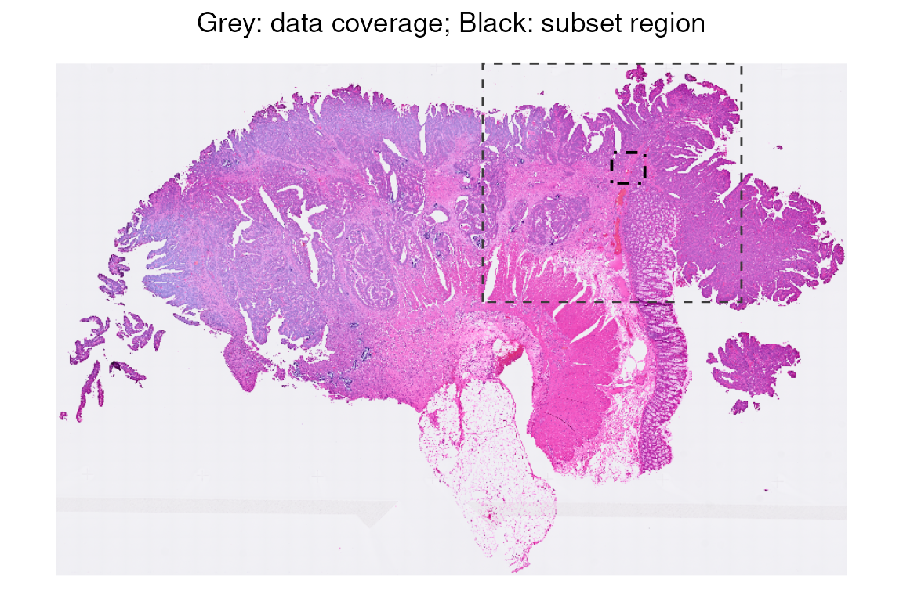
Plot cell polygons overlay H&E image for this subset region (in black box). Here is an overview of the subset of tissue section that we will work on:
vhdsub$polygon <- 1
p0 <- plotImage(vhdsub, bbox = unlist(getBoxRange(vhdsub)))
p1 <- plotSpatialFeature(vhdsub, bbox = unlist(getBoxRange(vhdsub)),
features = "polygon", alpha = 0.1, fill = NA, color = "white",
colGeometryName = "updatecellSeg", image_id = "hires") +
no_legend
(p0 + ggtitle("H&E region") |
p1 + ggtitle("Overlayed with cell boundaries")) &
center_title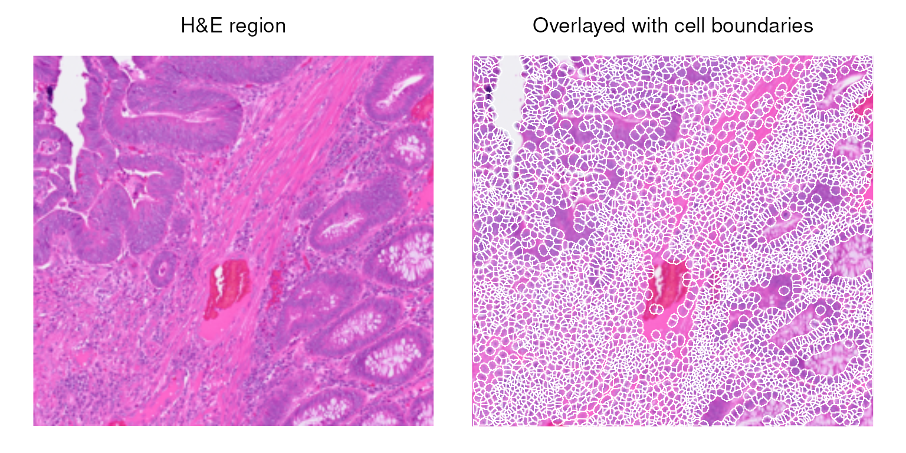
Get cell-level QC metrics for visualization with scuttle.
# Visualize library size to the polygons
sub <- list(mt = grep("^MT-", rownames(vhdsub)))
vhdsub <- addPerCellQCMetrics(vhdsub, subsets = sub)
vhdsub$log_sum <- log1p(vhdsub$sum)
CD <- colData(vhdsub) %>% as.data.frame()
head(CD %>% select(Barcode, sum, log_sum, subsets_mt_percent))
#> Barcode sum log_sum subsets_mt_percent
#> 84452 cellid_000084452-1 139 4.941642 3.597122
#> 84464 cellid_000084464-1 553 6.317165 2.169982
#> 84472 cellid_000084472-1 1218 7.105786 2.298851
#> 84476 cellid_000084476-1 1004 6.912743 4.681275
#> 84504 cellid_000084504-1 835 6.728629 5.029940
#> 84560 cellid_000084560-1 436 6.079933 2.981651Here is an overview of the cells colored by their log library size and mitochondrial percentage.
p0 <- plotSpatialFeature(vhdsub, features = "log_sum",
colGeometryName = "updatecellSeg") +
ggtitle("log library size")
p1 <- plotSpatialFeature(vhdsub, features = "subsets_mt_percent",
colGeometryName = "updatecellSeg") +
ggtitle("% mitochondrial")
(p0 | p1) &
gradient_theme &
scale_fill_gradientn(colors = pals::jet())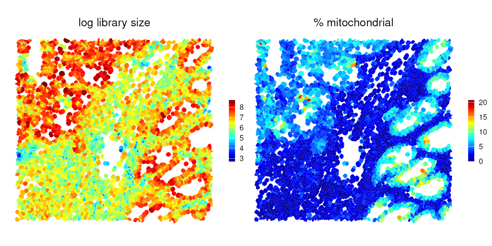
SpotSweeper determines outliers based on low log-library size, few uniquely detected features, or a high mitochondrial fraction compared to their surrounding neighborhood:
vhdsub <- localOutliers(vhdsub, metric="sum", direction="lower", log=TRUE)
vhdsub <- localOutliers(vhdsub, metric="detected", direction="lower", log=TRUE)
vhdsub <- localOutliers(vhdsub, metric="subsets_mt_percent", direction="higher", log=TRUE)
vhdsub$discard <-
vhdsub$sum_outliers |
vhdsub$detected_outliers |
vhdsub$subsets_mt_percent_outliers
# tabulate number of cells retained vs. removed by any criterion
table(vhdsub$discard)
#>
#> FALSE TRUE
#> 4406 13We can visualize the local outliers identified by
SpotSweeper spatially. However, they are difficult to see,
as only a few small cells are flagged as outliers.
common_args_qc <- list(fill = NA, color = "grey90", linewidth = 0.1,
colGeometryName = "updatecellSeg")
p0 <- exec(plotSpatialFeature,
vhdsub, features = "sum_outliers", !!!common_args_qc) +
ggtitle("low_lib_size")
p1 <- exec(plotSpatialFeature,
vhdsub, features = "detected_outliers", !!!common_args_qc) +
ggtitle("low_n_features")
p2 <- exec(plotSpatialFeature,
vhdsub, features = "discard", !!!common_args_qc) +
ggtitle("discard")
p0 + p1 + p2 +
plot_layout(nrow=1, guides="collect") &
thin_discrete_legend & center_title &
scale_fill_manual("discard", values=c("white", "red"))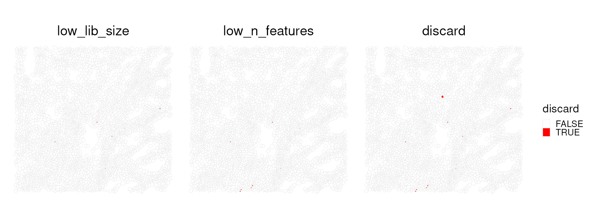
This Visium HD dataset provides matched scRNA-seq for the same
tissue, which avoids tissue and batch effects that often complicate
label transfer. The Level1 column contains broad,
interpretable populations that are well suited for deconvolution and
downstream interpretation. We will use these labels to map likely cell
identities onto our Visium HD cells.
First lets load in the data from the OSTA.data
package.
## SCE ref
id <- "Chromium_HumanColon_Oliveira"
## Download the data for OSTA.data and unzip the files
pa <- OSTA.data_load(id)
dir.create(td2 <- tempfile())
unzip(pa, exdir=td2)
# read into 'SingleCellExperiment'
fs <- list.files(td2, full.names=TRUE)
h5 <- grep("h5$", fs, value=TRUE)
sce <- read10xCounts(h5, col.names=TRUE)
# add cell metadata
csv <- grep("csv$", fs, value=TRUE)
cd <- read.csv(csv, row.names=1)
colData(sce)[names(cd)] <- cd[colnames(sce), ]
# use gene symbols as feature names
rownames(sce) <- make.unique(rowData(sce)$Symbol)
# exclude cells deemed to be of low-quality
sce <- sce[, sce$QCFilter == "Keep"]We are wanting to use this single cell data as a reference. It has
two resolutions of cell annotations. Lets check out what cells labels
are in Level1.
# tabulate subpopulations
table(sce$Level1)
#>
#> B cells Endothelial Fibroblast
#> 33611 7969 28653
#> Intestinal Epithelial Myeloid Neuronal
#> 22763 25105 4199
#> Smooth Muscle T cells Tumor
#> 43308 29272 65626Spaces can make manipulating data tricky sometimes so let’s replace them with underscores.
sce$Level1 <- gsub(" ", "_", sce$Level1)For speed, we down-sample to at most 1,000 cells per reference class. This preserves diversity within each class while keeping memory and runtime manageable.
There are many ways to transfer labels from single-cell data to
spatial data. We use spacexr
(i.e. RCTD) because it performs competitively in public
benchmarks, models mixed signals explicitly, and assigns each spatial
unit a clear class as a singlet or as one of several doublet types.
RCTD was originally designed for spot-based platforms such
as 10x Visium, where each spot captures RNA from multiple cells. It
treats the observed counts in a spot as a mixture of reference cell-type
expression profiles and uses a likelihood model to estimate non-negative
weights for each candidate cell type. It then compares a singlet model
against a doublet model to determine whether one cell type is sufficient
to explain the counts or whether two are required. The method also
learns scale factors to account for platform differences and total RNA
content, which helps it transfer labels across technologies.
In our setting we apply RCTD at cellular resolution
using segmented Visium HD data. Although each unit is intended to
represent a single cell, there are still cases where the measured counts
reflect more than one cell type. This can arise from partial volume
effects at cell boundaries, segmentation errors, tightly packed regions,
or local diffusion of transcripts. Running RCTD in doublet
mode remains useful here because it can flag these cases and provide a
principled estimate of the most likely composition. In practice we
expect most units to be classified as singlets, with a minority of
doublets that warrant closer inspection or additional filtering.
Unfortunately running RCTD is slow, so we will load a
precompiled version.
# data("rctd_result_level1.RData", package = "EuroBioC2025_OSTA_Workshop")
load(here::here("data/rctd_result_level1.RData"))!!! Do not run this in the workshop it will take 30 mins.
# ## Perform initial preprocessing of the visiumHD and single cell reference data
# rctd_data <- createRctd(spatial_experiment = vhdsub, # Our visium HD data
# reference_experiment = sce[, down_sample],# Down-sampled single cell reference
# cell_type_col="Level1", # We will use the Level1 resolution of cell types.
# UMI_min = 0) # To make things easier, we won't filter away cells that RCTD thinks are poor quality.
#
# ## Perform the deconvolution.
# rctd_result_level1 <- runRctd(rctd_data, max_cores = 4, rctd_mode = "doublet")
# # save(rctd_result_level1, file = here::here("data/rctd_result_level1.RData"))Note: RCTD does have some internal QC, so lets check if
anything was filtered out prior to running deconvolution.
dim(vhdsub)
#> [1] 18132 4419
dim(rctd_result_level1)
#> [1] 9 4418
setdiff(colnames(vhdsub), colnames(rctd_result_level1))
#> [1] "91874"
vhdsub$discard[colnames(vhdsub) == "91874"]
#> [1] TRUE
vhdsub$sum_outliers[colnames(vhdsub) == "91874"]
#> [1] TRUE
vhdsub$sum[colnames(vhdsub) == "91874"]
#> [1] 14
head(sort(vhdsub$sum))
#> [1] 14 18 19 19 22 23The spot labels are saved in the colData() as
spot_class. This provides a quick quality check: a majority
of singlet classifications at cell resolution is expected and supports
the validity of the H&E-guided segmentation.
table(rctd_result_level1$spot_class)
#>
#> reject singlet doublet_certain doublet_uncertain
#> 115 2660 1347 296We then synchronize the deconvolution labels back into our
vhdsub SpatialFeatureExperiment object by
matching cell ids to keep everything aligned.
# Subset to RCTD filtered object for convenience
vhdsub <- vhdsub[, colnames(vhdsub)]
# Here we use match to ensure that we match the cell IDs
vhdsub$cellTypeClass <- rctd_result_level1$spot_class[
match(colnames(vhdsub),colnames(rctd_result_level1))]
vhdsub$cellType <- rctd_result_level1$first_type[
match(colnames(vhdsub), colnames(rctd_result_level1))]
# Double check that the numbers of the cell types is consistent
table(vhdsub$cellType)
#>
#> B_cells Endothelial Fibroblast
#> 497 460 1010
#> Intestinal_Epithelial Myeloid Neuronal
#> 529 547 11
#> Smooth_Muscle T_cells Tumor
#> 90 262 1012We can visualize the spatial location of singlets, doublets, or the
assigned cell types by RCTD.
p0 <- plotSpatialFeature(vhdsub, features = "cellTypeClass",
colGeometryName = "updatecellSeg") +
scale_fill_manual(values = unname(pals::okabe()))
p1 <- plotSpatialFeature(vhdsub, features = "cellType",
colGeometryName = "updatecellSeg") +
scale_fill_manual(values = unname(pals::trubetskoy()))
(p0 | p1) & thin_discrete_legend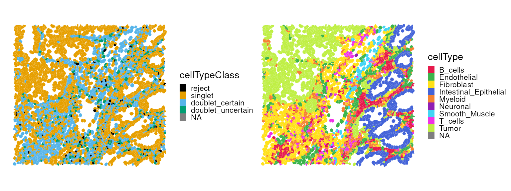
Previously, we found one cell was flagged as a local outlier by
SpotSweeper, and now we can check its property.
table(vhdsub$subsets_mt_percent_outliers == TRUE)
#>
#> FALSE TRUE
#> 4418 1
vhdsub$cellType[vhdsub$subsets_mt_percent_outliers == TRUE]
#> [1] "T_cells"
vhdsub$cellTypeClass[vhdsub$subsets_mt_percent_outliers == TRUE]
#> [1] doublet_uncertain
#> Levels: reject singlet doublet_certain doublet_uncertainFilter out low quality cells from the
SpatialFeatureExperiment object, prior to spatial
clustering.
vhdsub <- vhdsub[, !vhdsub$discard]
dim(vhdsub)
#> [1] 18132 4406First, we identify highly variable genes (HVGs) in the target area. Note that spatially variable genes (SVGs) could be used instead.
vhdsub <- logNormCounts(vhdsub)
dec <- modelGeneVar(vhdsub)
hvg <- getTopHVGs(dec, n=3e3)Banksy utilizes a pair of spatial kernels to capture gene expression variation, followed by dimension reduction and graph-based clustering to identify spatial domains.
# restrict to selected features
tmp <- vhdsub[hvg, ]
# compute spatially aware 'Banksy' PCs
set.seed(1000)
tmp <- computeBanksy(tmp,
assay_name = "logcounts",
coord_names = c("array_row", "array_col"),
k_geom = 8) # consider first order neighbors
tmp <- runBanksyPCA(tmp,
lambda = 0.2, # use little spatial information,
npcs = 20)
reducedDim(vhdsub, "PCA") <- reducedDim(tmp)
set.seed(1000)
tmp <- Banksy::clusterBanksy(tmp, lambda = 0.2, npcs = 20, resolution = 0.8)
vhdsub$Banksy <- tmp$clust_M0_lam0.2_k50_res0.8
table(vhdsub$Banksy)
#>
#> 1 2 3 4 5 6 7
#> 1287 844 700 560 471 281 263Now we can visualize clustering result spatially.
plotSpatialFeature(vhdsub, features = "Banksy",
colGeometryName = "updatecellSeg") +
scale_fill_manual(values = unname(pals::kelly())) +
thin_discrete_legend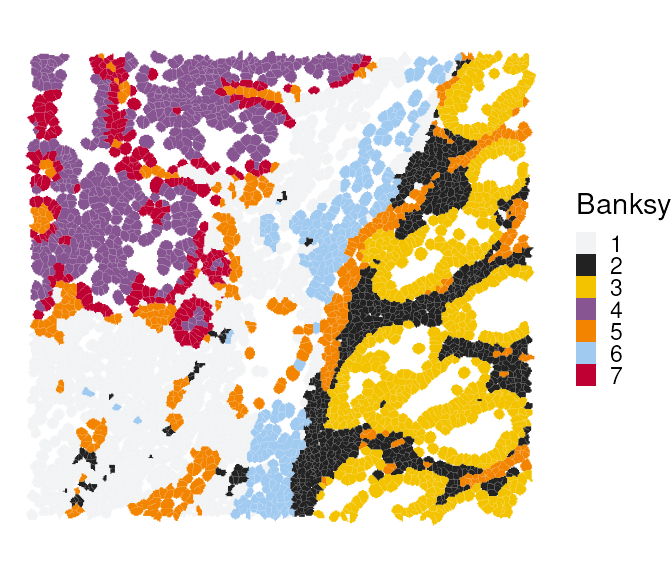
Next, we can perform differential gene expression (DGE) analysis to identify markers for each cluster. We also compute the cluster-wise mean expression of selected markers:
# differential gene expression analysis
mgs <- findMarkers(vhdsub, groups = vhdsub$Banksy, direction = "up")
# select for a few markers per cluster
top <- lapply(mgs, \(df) rownames(df)[df$Top <= 2])
top <- unique(unlist(top))
# average expression by clusters
pbs <- aggregateAcrossCells(vhdsub,
ids = vhdsub$Banksy, subset.row = top,
use.assay.type = "logcounts", statistics = "mean")The marker genes in each cluster can be visualized with a heatmap:
# visualize averages z-scaled across clusters
exec(pheatmap,
mat = t(assay(pbs)), scale = "column", breaks = seq(-2, 2, length = 101),
!!!common_args_heatmap)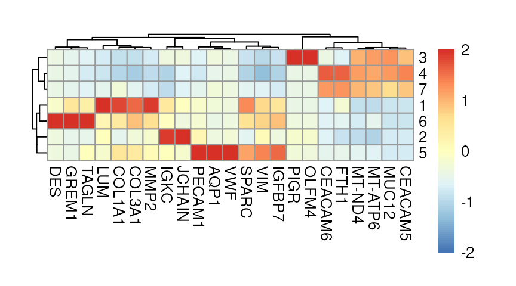
We can visualize some marker genes of cluster 1, 3, and 6, respectively:
p0 <- plotSpatialFeature(vhdsub, features = "MMP2",
colGeometryName = "updatecellSeg") + ggtitle("MMP2")
p1 <- plotSpatialFeature(vhdsub, features = "PIGR",
colGeometryName = "updatecellSeg") + ggtitle("PIGR")
p2 <- plotSpatialFeature(vhdsub, features = "DES",
colGeometryName = "updatecellSeg") + ggtitle("DES")
(p0 | p1 | p2) &
gradient_theme &
scale_fill_gradientn(colors = rev(hcl.colors(9, "Rocket")))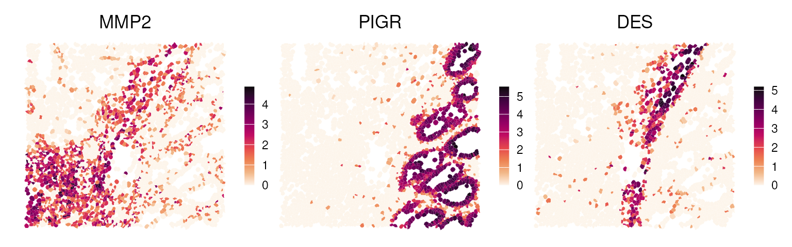
We can visualize the results spatially:
p0 <- plotSpatialFeature(vhdsub, features = "cellType",
colGeometryName = "updatecellSeg") +
scale_fill_manual(values = unname(pals::trubetskoy())) +
ggtitle("RCTD")
p1 <- plotSpatialFeature(vhdsub, features = "Banksy",
colGeometryName = "updatecellSeg") +
scale_fill_manual(values = unname(pals::kelly())) +
ggtitle("Banksy")
p0 + p1 +
plot_layout(nrow=1) &
center_title & thin_discrete_legend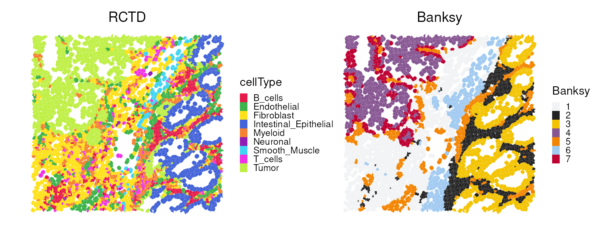
We observe that Banksy delineates tissue borders very
well, while RCTD provides direct biological insight into
the underlying clusters. Their concordance can be visualized using a
heatmap:
fq <- prop.table(table(vhdsub$Banksy, vhdsub$cellType), 1)
exec(pheatmap, fq, !!!common_args_heatmap)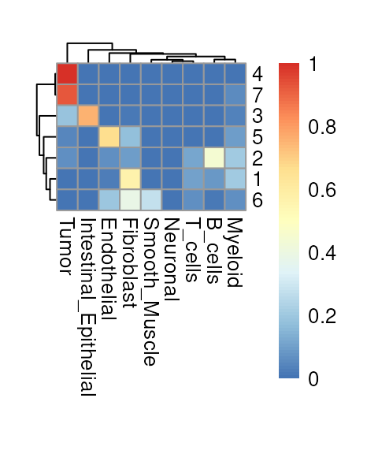
Individual biomarkers identified in the DGE step may or may not have phenotypic relevance. Instead, we can quantify gene sets that are known to orchestrate biological functions or pathways, such as metabolic activity, cell cycle progression, and cell death, at the single-cell level.
MSigDB provides a programmatic interface to the Molecular Signatures Database (MSigDB) (Subramanian et al. (2005)), one of the largest collections of molecular signatures and pathways. We start with retrieving the human hallmark database.
# retrieve & simplify hallmark gene sets from 'MSigDB'
db <- msigdbr(species="Homo sapiens", collection="H")
gs <- split(db$ensembl_gene, db$gs_name)
names(gs) <- tolower(gsub("HALLMARK_", "", names(gs)))Next, we score these gene sets with AUCell (Aibar et al. (2017)), a rank-based approach that (i) ranks genes for every cells, and (ii) compute area under the recovery curve (AUC) values for each gene set.
# realize (sparse) gene expression matrix
mtx <- as(logcounts(vhdsub), "dgCMatrix")
# use ensembl identifiers as rownames
rownames(mtx) <- rowData(vhdsub)$ID
# filter for genes represented in panel
.gs <- lapply(gs, intersect, rownames(mtx))
# keep only those with at least 5 genes
.gs <- .gs[sapply(.gs, length) >= 5]
# build per-cell gene rankings
rnk <- AUCell_buildRankings(mtx, plotStats=FALSE, verbose=FALSE)
# calculate AUC for each gene set in each cell
auc <- AUCell_calcAUC(geneSets=.gs, rankings=rnk, verbose=FALSE)A heatmap can be used to check which signatures are highly expressed in which cell types. To diversify the visualization, here we summarize the top 2 signatures per cell type, and display their scaled average enrichment score in a waterfall plot.
# aggregate AUC values by cellType
mu <- aggregateAcrossCells(auc, ids=vhdsub$cellType,
use.assay.type="AUC", statistics="mean")
mu_row_scaled <- rowScale(mu)
top_mu <- getTopSigDF(mu_row_scaled, top_n = 2)
plotDivergentBar(top_mu)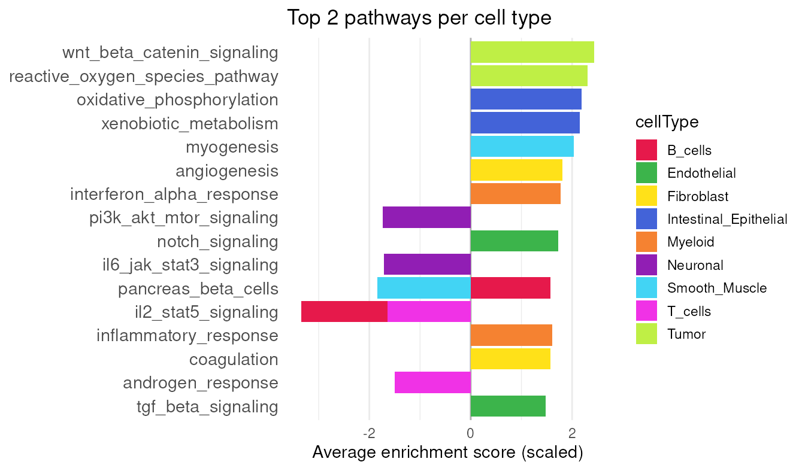
p53 is a well-known pathway related to tumor cell growth (Vogelstein et al. (2000)), and its enrichment score can be visualized spatially.
# add results as cell metadata
colData(vhdsub)[rownames(auc)] <- t(assay(auc))
plotSpatialFeature(vhdsub, feature = "p53_pathway",
colGeometryName = "updatecellSeg") + gradient_theme +
ggtitle("p53 Pathway")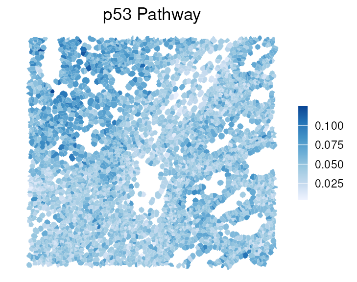
Because cell segmentation polygons are available for each cell, we can derive a range of shape metrics (Gunz et al. (2025)).
# get cell segmentations
cellpo <- colGeometry(vhdsub, "updatecellSeg")
cellpo$cellType <- vhdsub$cellType
# get shape metrics
shme <- totalShapeMetrics(cellpo)
shme[1:3, 1:3]
#> cellpo1 cellpo2 cellpo3
#> Area 1067.8050000 854.2350000 2558.400000
#> Compactness 0.7758488 0.4156039 0.521787
#> Eccentricity 0.8027392 0.5734005 0.740000Here we can check the relationship between shape metrics in the first two principal components (PCs):
tshme <- t(shme) |> as.data.frame()
autoplot(
prcomp(tshme, scale. = TRUE),
data = cellpo,
color = "cellType",
size = 0.8, alpha = 0.8,
loadings.colour = "blue",
loadings.label = TRUE,
loadings.label.size = 5,
loadings.label.colour = "black") +
scale_color_manual(values=unname(pals::trubetskoy())) +
theme_classic() + enlarge_legend_dot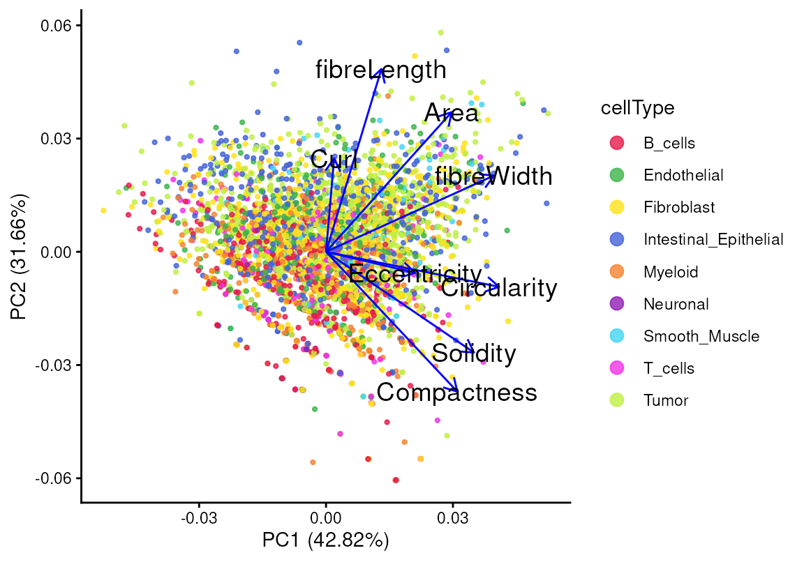
The first principal component (PC1) explains 42.82% of the
variability in the shape statistics, and the second principal component
(PC2) captures 31.66%. The angle between two shape metrics reflects
their degree of similarity, while the length of a loading indicates the
strength of a given metric. For example, the loadings of
fibreLength and Compactness are nearly
perpendicular, indicating a weak or negative correlation between them,
which is consistent with their relationship in the scatter plot. We can
also color the points by the log gene expression of PIGR, a
common epithelial marker, as shown previously. Cells with high
PIGR expression tend to exhibit longer
fibreLength, with no obvious association with
compactness.
tshme$logPIGR <- logcounts(vhdsub)["PIGR", ]
ggplot(tshme, aes(x = fibreLength, y = Compactness)) +
geom_point(aes(color = logPIGR), alpha = 0.8) +
scale_color_viridis_c(option = "rocket", direction = -1) +
geom_density2d() +
geom_smooth(method='loess', formula= y~x) +
stat_cor(method = "pearson", label.x.npc = "center", label.y.npc = "top") +
theme_classic() + gradient_theme + ggtitle("PIGR")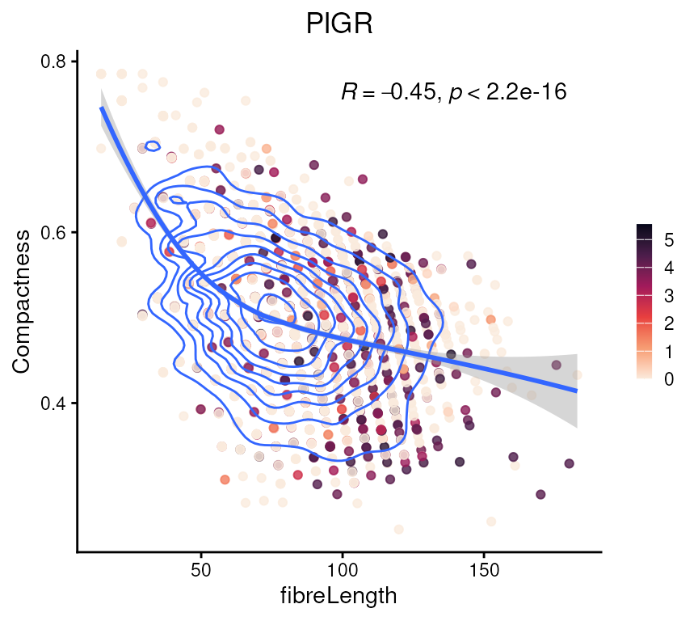
Next, we can summarize the shape statistics per cell type. We check
the differences in fibreLength and Compactness
across cell types.
tshme |>
cbind(cellType = vhdsub$cellType) |>
pivot_longer(cols = -cellType, names_to = "metrics", values_to = "val") |>
filter(metrics %in% c("Compactness", "fibreLength")) |>
ggplot(aes(x = cellType, y = val, fill = cellType)) +
geom_violin() +
geom_boxplot(aes(fill = NULL), width = 0.3) +
facet_wrap(~metrics, scales = "free") +
scale_fill_manual(values = unname(pals::trubetskoy())) +
theme_classic() +
theme(axis.text.x = element_text(angle = 45, hjust = 1)) +
guides(fill = "none")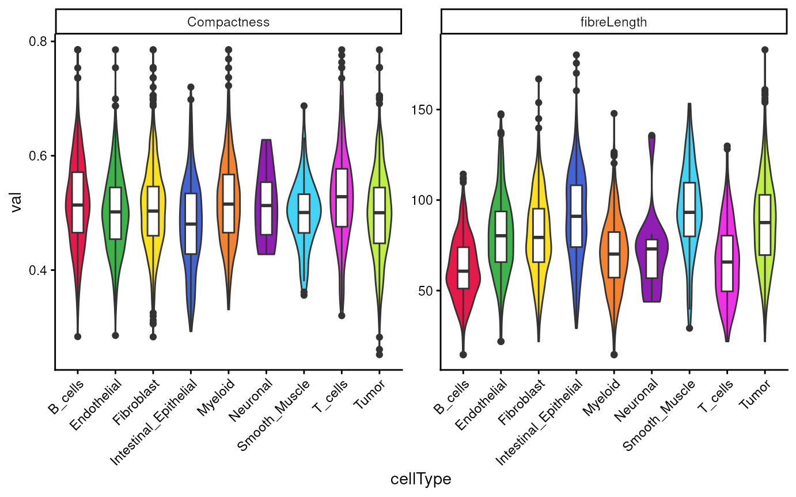
We observer more uniform distribution inCompactness, while
more variability in fibreLength across cell types.
We can also view these shape metrics, such as
fibreLength, spatially:
colData(vhdsub)[names(tshme)] <- tshme
plotSpatialFeature(vhdsub, features = "fibreLength",
colGeometryName = "updatecellSeg") +
scale_fill_gradientn(colors = c("#3B3EA8", "#278EC8", "orange", "yellow")) +
gradient_theme + ggtitle("fibreLength")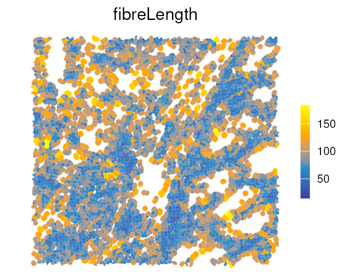
For example, immune cells have shorter fibreLength
compared to tumor and stromal cells, which is also shown in the boxplot
above.
What makes spatial transcriptomics more powerful than scRNA-seq is its integration with spatial statistics. There are two types of measures for spatial association: global and local.
We next quantify spatial proximity between annotated cell types. The
getPairwise() function from the spicyR
package computes the K-cross function across all pairs of classes,
summarizing whether cell type A tends to appear within distance
r of cell type B more often than expected under spatial
randomness. Here we use a radius of 200 units (~50 microns) to capture
immediate neighborhood effects at approximately one to two cell
diameters.
crossK = getPairwise(vhdsub,
r = 200,
cellType = "cellType",
imageID = "sample_id",
spatialCoords = c("pxl_col_in_fullres",
"pxl_row_in_fullres"))We can visualize these relationships using
imageCrossPlot(). It visualizes enrichment and avoidance
across all pairs, which is handy for scanning for strong interactions
before diving deeper. To aid interpretation, follow the sign: values
above zero indicate spatial attraction at radius r (more
co-occurrence than expected), while values below zero indicate spatial
repulsion.
imageCrossPlot(crossK, limits = c(-400,400)) + gradient_theme +
ggtitle("Spatial association") +
theme(axis.line = element_blank(), axis.ticks = element_blank())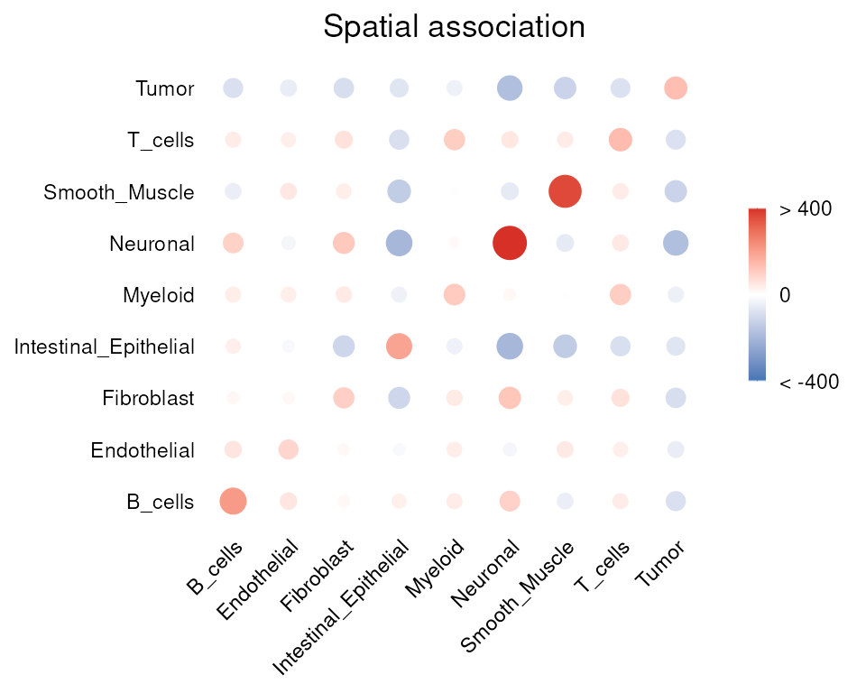
We can re-visit the spatial composition of cell types, annotated by
RCTD above, to build intuition for these statistics. This
helps confirm that any strong pairwise signals are visible in the image
and not driven by a handful of cells.
Visium HD cell-level data can be modeled as a point pattern process (Emons et al. (2025)). Different than the previous global average measure, local indicators of spatial association (LISA) accounts for the local contribution of each cell (Anselin (1995)). First, we construct the plotting data frame that contains LISA Ripley’s K value for only Tumor cells.
df <- .speToDf(vhdsub)
pp <- .dfToppp(df, marks="cellType")
# subset to only Tumor cells
ppSub <- subset(pp, marks %in% "Tumor")
# calculate LISA K curves
resLocal <- localK(ppSub, verbose=FALSE)
# code adapted from
# https://robinsonlabuzh.github.io/pasta/01-imaging-univar-ppSOD.html
df <- resLocal |>
as.data.frame() |>
pivot_longer(cols = starts_with("iso"), names_to="curve")
sel <- df |>
filter(r > 700.5630 & r < 702.4388) |>
mutate(sel=value) |>
select(curve, sel)
plt_df <- left_join(df, sel)
head(plt_df)
#> # A tibble: 6 × 5
#> r theo curve value sel
#> <dbl> <dbl> <chr> <dbl> <dbl>
#> 1 0 0 iso0001 0 4642842.
#> 2 0 0 iso0002 0 4042413.
#> 3 0 0 iso0003 0 4173456.
#> 4 0 0 iso0004 0 4113007.
#> 5 0 0 iso0005 0 2766533.
#> 6 0 0 iso0006 0 4535711.Plot the LISA Ripley’s K value for each tumor cell, colored by its value at a radius of 700 μm. Curves above the gray line representing complete spatial randomness (CSR) indicate highly clustered tumor cells.
ggplot(plt_df, aes(r, value, group=curve, col=sel)) +
geom_line() +
geom_line(aes(y=theo), linetype=2, col="darkgray") +
geom_vline(xintercept=700) +
scale_color_viridis_c(option = "mako") +
xlab("Radius (r)") +
scale_y_continuous(breaks = c(0, 2e6, 4e6), labels = c("0", "2", "4"),
name = bquote("Relationship value x"~10^6)) +
theme_classic() +
theme(legend.position="none",
axis.title = element_text(size=14),
panel.grid.major = element_line(colour = "grey90", linetype = 2)) 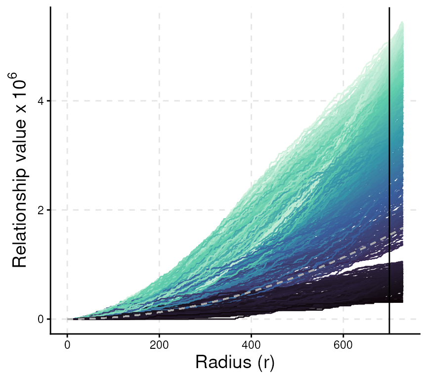
While pairwise proximity statistics are a sensible first step, they
can sometimes be misleading because they ignore the broader tissue
context. For example, the K-cross function from spicyR will
tell us whether two cell types are found close together more often than
expected under a random distribution, but it does not ask conditional
questions. Biologists, however, often want to know things like:
“Do immune cells cluster more tightly with tumor than we would expect, even after accounting for the fact that immune cells already tend to occur together?”
This is where Kontextual from the Statial
package comes in. Kontextual extends beyond pairwise
enrichment by creating a contextual null model. Instead of comparing two
cell types against a fully random distribution, it compares them against
what we would expect given the observed mixture of other neighboring
cell types. In practice, this means that Kontextual is
testing whether a particular association is stronger (or weaker) than
would be expected given the local cellular environment.
For this demonstration, we define an immune context composed of T
cells, Myeloid cells, and B cells. Kontextual then
evaluates whether, within this immune backdrop, specific pairs (for
example, Myeloid–Tumor) show evidence of additional attraction or
repulsion at a chosen spatial scale. The method is flexible: you can
define any grouping of interest as a “parent” or context, and then
interrogate the conditional relationships of one population relative to
that context.
## Create a vector saying which cells are in the immune context
immune <- c("T_cells", "Myeloid", "B_cells")
## Define the parents we want to use as contexts
parentDf <- parentCombinations(
all = unique(vhdsub$cellType),
immune = immune)
## Run Kontextual with radius of 20
resultsKontextual <- Kontextual(
cells = vhdsub,
parentDf = parentDf,
imageID = "sample_id",
cellType = "cellType",
spatialCoords = c("pxl_col_in_fullres", "pxl_row_in_fullres"),
r = 200
)Let us visualize the results.
plotKontext <- resultsKontextual |>
ggplot(aes(original, kontextual, label = test)) +
geom_point() +
geom_hline(yintercept = 0) +
geom_vline(xintercept = 0) +
theme_classic()
ggplotly(plotKontext)We can then inspect radii-dependent curves (for example Myeloid around Tumor) to confirm at which scales the effect appears, which is often informative for processes like invasion fronts or peritumoral niches.
curves <- kontextCurve(
cells = vhdsub, rs = seq(20, 500, 50),
from = "Tumor", to = "Myeloid", parent = immune, se = TRUE,
image = "sample01", cellType = "cellType", imageID = "sample_id"
)
p <- kontextPlot(curves) + theme_classic() +
scale_color_manual(labels = c("Kontextual", "L-Function"),
values = c("#00BE70", "darkblue")) +
scale_fill_manual(values = c("lightgreen", "lightblue")) +
theme(panel.grid.major = element_line(colour = "grey90", linetype = 2),
legend.position = "top",
legend.text = element_text(size = 13),
axis.title = element_text(size = 14))
p@layers$geom_hline$aes_params$colour <- "black" # update dashed line color
p$layers[["geom_ribbon"]]$show.legend <- FALSE # remove geom ribbon box
p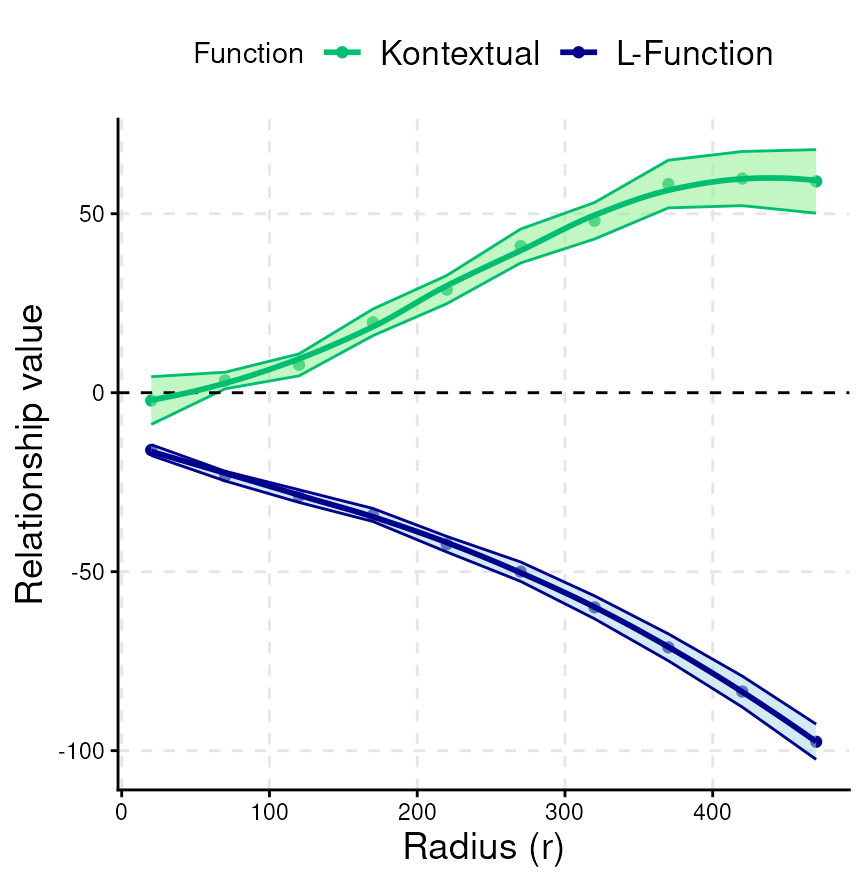
Because immune cells are already densely packed, Kontextual identifies myeloid cells as being particularly close to tumor cells beyond a 50-pixel radius. In contrast, when immune context is not considered, the L-function suggests that myeloid cells and tumor cells are not spatially close.To aid interpretation, we can also re-plot the spatial map with the immune context grayed and the two focal types colored. This quickly links our statistical findings to a tangible patterns in the tissue.
ct_interest <- c("Myeloid", "Tumor")
vhdsub$myetu <- ifelse(!(vhdsub$cellType %in% ct_interest),
"Other", vhdsub$cellType)
vhdsub$myetu <- factor(vhdsub$myetu, levels = c(ct_interest, "Other"))
plotSpatialFeature(vhdsub, features = "myetu",
colGeometryName = "updatecellSeg") +
scale_fill_manual(name = "cellType",
values = c("Myeloid" = "#f58231", "Tumor" = "#bfef45",
"Other" = "grey90")) +
thin_discrete_legend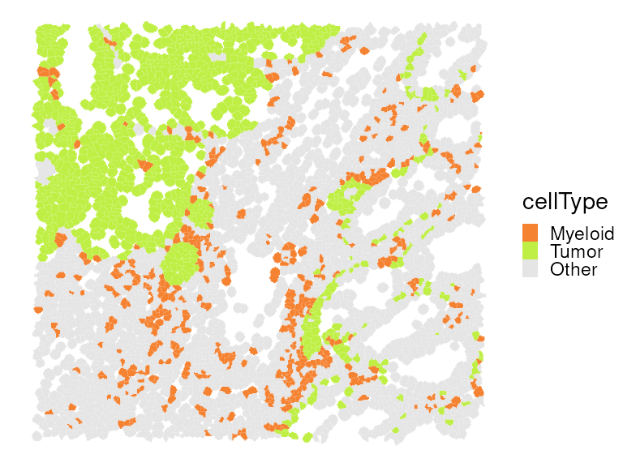
Spatial proximity tells us where different cell types are relative to one another, but an equally important question is what happens to those cells when they are in close contact. Proximity alone does not guarantee functional interaction. To uncover biological relevance, we need to test whether changes in the microenvironment are associated with measurable shifts in gene expression within a given cell type.
This is the motivation behind spatioMark, part of the
Statial package. The idea is simple:
take a target population (for example, Myeloid cells),
quantify its local environment (how many Tumor cells, T cells, Fibroblasts, etc. are nearby within a certain radius),
and ask whether the transcriptomes of the target cells vary with that environment.
In practice, spatioMark first computes local abundances
of each cell type around every cell, giving each cell a numerical
“neighborhood profile.” These covariates then feed into a gene-wise
regression model. For each gene expressed in the target population,
spatioMark fits a generalized linear model. As we have
count data in this case, we leverage functionality in the
edgeR package to model the data as negative binomial. The
coefficients tell us whether gene expression increases or decreases as
the abundance of a chosen neighbor rises.
First, we need to quantify the abundance of each cell type around each cell.
vhdsub <- getAbundances(vhdsub,
r = 200,
cellType = "cellType",
imageID = "sample_id"
)Next, we focus on whether Myeloid cells show distinct expression patterns when they are located close to Tumor cells.
stateChanges <- calcStateChanges(
cells = vhdsub,
type = "abundances",
from = "Myeloid",
to = "Tumor",
test = "nb",
imageID = "sample_id"
)
stateChanges |> head(20)
#> imageID primaryCellType otherCellType marker coef tval
#> 1 sample01 Myeloid Tumor IGHG3 -0.26986581 -18.176051
#> 2 sample01 Myeloid Tumor SPP1 0.11458632 13.630583
#> 3 sample01 Myeloid Tumor MMP11 0.05409721 7.351737
#> 4 sample01 Myeloid Tumor MMP12 0.05773036 6.921257
#> 5 sample01 Myeloid Tumor IL1RN 0.04404694 5.943101
#> 6 sample01 Myeloid Tumor IGHD -0.02380578 -5.875567
#> 7 sample01 Myeloid Tumor CTSB 0.03596732 5.741341
#> 8 sample01 Myeloid Tumor GREM1 -0.05300939 -5.724902
#> 9 sample01 Myeloid Tumor MT-CO1 0.03483848 5.647737
#> 10 sample01 Myeloid Tumor WNT5A 0.03899693 5.637293
#> 11 sample01 Myeloid Tumor PYGB 0.04308331 5.471111
#> 12 sample01 Myeloid Tumor MGP -0.04772709 -5.118931
#> 13 sample01 Myeloid Tumor APOC1 0.03665541 5.096505
#> 14 sample01 Myeloid Tumor CEACAM6 0.03919565 5.091371
#> 15 sample01 Myeloid Tumor PLAU 0.03954202 4.999526
#> 16 sample01 Myeloid Tumor IGKC -0.07047815 -4.912809
#> 17 sample01 Myeloid Tumor MT-CO3 0.03117035 4.901309
#> 18 sample01 Myeloid Tumor KRT23 0.02789161 4.848393
#> 19 sample01 Myeloid Tumor DES -0.04838446 -4.805449
#> 20 sample01 Myeloid Tumor IGHG1 -0.05020400 -4.782172
#> pval fdr
#> 1 3.994157e-74 3.392237e-70
#> 2 1.317335e-42 5.594065e-39
#> 3 9.782363e-14 2.769387e-10
#> 4 2.238265e-12 4.752396e-09
#> 5 1.398403e-09 2.375328e-06
#> 6 2.106995e-09 2.982451e-06
#> 7 4.696492e-09 5.493550e-06
#> 8 5.174661e-09 5.493550e-06
#> 9 8.128685e-09 7.335579e-06
#> 10 8.637206e-09 7.335579e-06
#> 11 2.236116e-08 1.726485e-05
#> 12 1.536358e-07 1.078256e-04
#> 13 1.729906e-07 1.078256e-04
#> 14 1.777415e-07 1.078256e-04
#> 15 2.873572e-07 1.627016e-04
#> 16 4.489043e-07 2.378050e-04
#> 17 4.760020e-07 2.378050e-04
#> 18 6.223286e-07 2.936354e-04
#> 19 7.720243e-07 3.450949e-04
#> 20 8.670557e-07 3.681952e-04The previous output is a ranked list of genes, highlighting markers
that change as Myeloid cells are near tumor cells. One of the top genes
on this list is SPP1 which is known to be expressed in
tumor-associated macrophages. We can visualize this relationship using
the plotStateChanges() function.
p <- plotStateChanges(
cells = vhdsub,
image = "sample01",
type = "abundances",
from = "Myeloid",
to = "Tumor",
marker = "SPP1",
imageID = "sample_id",
size = 1,
shape = 19,
interactive = FALSE,
method = "lm"
)
p[[1]] + theme_void() +
theme(legend.key.width = grid::unit(0.5, "lines"),
legend.key.height = grid::unit(1, "lines")) + facet_null() +
ggtitle("Cell Points: Myeloid, Cell Density: Tumor") + center_title 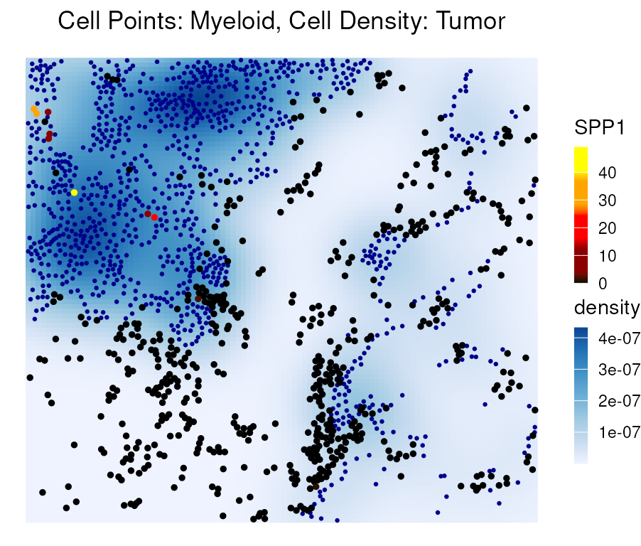
However, there are some genes that not expressed in Macrophages such as CEACAM6 which are likely lateral spillover or diffusion.
sce[, down_sample] |>
join_features(features = "CEACAM6", shape = "wide") |>
mutate(logCEACAM6 = log1p(CEACAM6)) |>
ggplot(aes(x = Level1, y = logCEACAM6, fill = Level1)) +
geom_boxplot() +
scale_fill_manual(values = unname(pals::trubetskoy())) +
theme_classic() + ylab("CEACAM6 log expression") +
theme(axis.text.x = element_text(angle = 45, hjust = 1),
legend.position = "none") +
thin_discrete_legend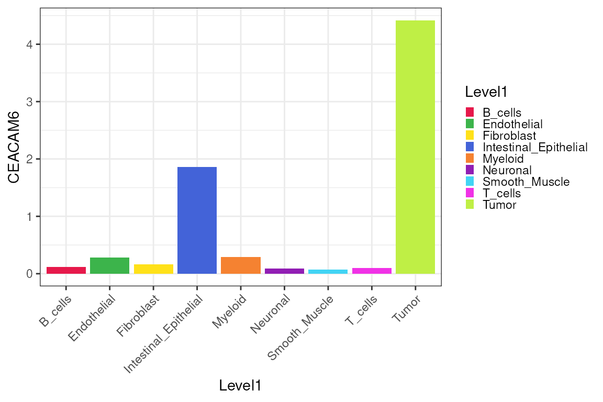
Because we already computed RCTD weights, we can
mitigate contamination by adding deconvolution-derived components as
covariates to our models. By storing the RCTD cell-type
weight matrix into reducedDim(vhdsub, "RCTD"), we can pass
"RCTD" to the contamination argument of
calcStateChanges(). spatioMark will use these
estimates of contamination in its modelling to hopefully remove false
positives like CEACAM6 while preserving genuine
relationships.
contam <- assay(rctd_result_level1, 1) |>
t() |>
as.matrix() |>
as.data.frame()
reducedDim(vhdsub, "RCTD") <- contam[match(colnames(vhdsub), rownames(contam)),]After correction, the false discovery rate of CEACAM6 is no longer significant at a threshold of 0.05. The rank of this gene falls from 14 to 173, while other Macrophage-relevant top genes, such as SPP1, keep their high rankings and remain contamination-invariant.
stateChangesCon <- calcStateChanges(
cells = vhdsub,
type = "abundances",
from = "Myeloid",
to = "Tumor",
test = "nb",
imageID = "sample_id",
contamination = "RCTD"
)
stateChangesCon |> filter(marker == "CEACAM6")
#> imageID primaryCellType otherCellType marker coef tval pval
#> 1 sample01 Myeloid Tumor CEACAM6 0.0225659 2.376978 0.008727561
#> fdr
#> 1 0.4283528Next, we can visualize the change of ranking of CEACAM6 after decontamination, among the top 20 marker genes as Myeloid cells get near Tumor cells.
plotRankChange(target_gene = "CEACAM6", n = 20, stateChanges, stateChangesCon)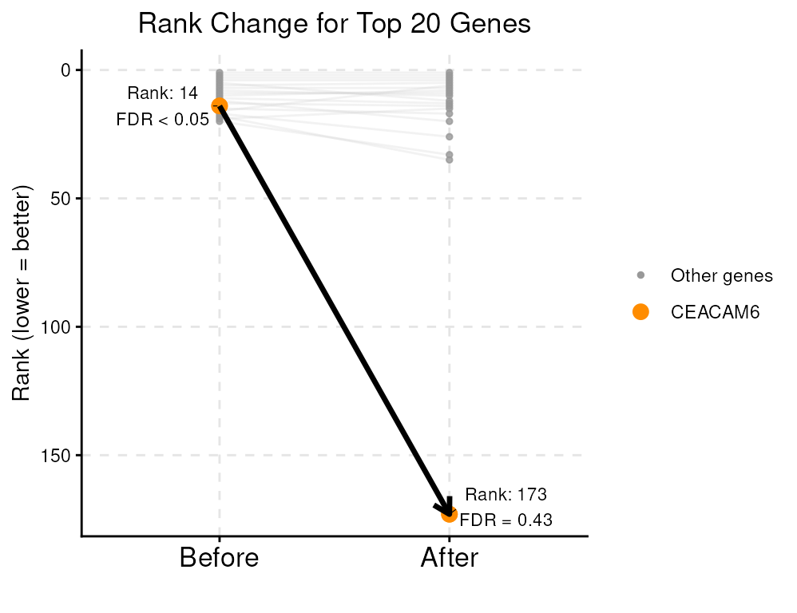
So far, we have analyzed one CRC sample from patient P2. In fact, Oliveira et al. (2025) includes multiple patients in this Visium HD public dataset, spanning different disease conditions (healthy vs. cancer). To apply spatial statistics to assess cell-type colocalization across multiple conditions, you can refer to the Multi-sample chapters of the OSTA book: a. Differential spatial patterns, b. Differential colocalization, c. Structure-based analysis
You can try using a finer resolution of cell type classified by
RCTD.
Or you can try using a different deconvolution algorithm.
set.seed(1000)
vhd2 <- vhdsub
colnames(spatialCoords(vhd2)) <- c("x", "y")
sce2 <-sce[, down_sample]
counts(vhd2) <- as(counts(vhd2), "sparseMatrix")
counts(sce2) <- as(counts(sce2), "sparseMatrix")
CARD_obj <- CARD_deconvolution(
spe = vhd2,
sce = sce2,
sc_count = NULL,
sc_meta = NULL,
spatial_count = NULL,
spatial_location = NULL,
ct_varname = "Level2",
ct_select = NULL, # decon with all sce$Annogrp cell types
sample_varname = NULL, # use all sce as one ref sample
mincountgene = 0,
mincountspot = 0
)
# a matrix/data.frame of probabilities per cell (rows) × cell types (cols)
P <- CARD_obj$Proportion_CARD[colnames(vhdsub), ]
# cell type with the largest probability in each row
vhdsub$cellType2 <- colnames(P)[max.col(P, ties.method = "first")]
reducedDim(vhdsub, "CARD") <- as.data.frame(P)